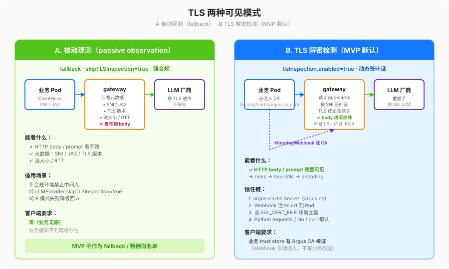

tls-design.md — 两种可见模式 + CA 信任模型 + 证书轮换 + 风险 + 降级

1. 两种可见模式
| 模式 |
能否看到 HTTP body / prompt？ |
适用场景 |
对客户端的要求 |
| A. 被动观测（passive observation） |
❌。只能看到 ClientHello SNI / JA3 / 握手 TLS 版本 / 流大小 / RTT 这类元数据。 |
1) 合规环境严格禁止中间人；2) LLMProvider.skipTLSInspection=true 的特例白名单；3) B 模式失败降级回 A。 |
零：业务侧什么都不用改，业务感知不到观枢的存在。 |
| B. TLS 解密检测（TLS-terminated inspection，MVP 默认） |
✅。网关动态签叶子证书把 TLS 终止在自身，body 过检测流水线之后再和真实上游重握手。 |
默认，绝大多数 LLMProvider。 |
需要业务 Pod 的 trust store 里有 Argus 的 CA 根证书（通过 MutatingWebhook 自动注入，不算业务改造 C3）。 |
MVP 默认行为：B 开启，A 作为 fallback。
2. CA 根证书要求 & 信任模型
- 根证书（
argus-ca-tls Secret）只能有一份，放在 argus 命名空间，keys = tls.crt, tls.key。
- 根证书密钥算法：RSA-2048 或 ECDSA P-256。禁止 RSA-1024、md5、sha1。
- 根证书有效期 ≤ 365 天；叶子证书 ≤ 24h。
- 根证书信任链：
1. MutatingWebhook 在 Pod 创建时，把 tls.crt 注入到 Pod 内 /etc/ssl/certs/argus-ca.pem。
2. 设环境变量 SSL_CERT_FILE=/etc/ssl/certs/argus-ca.pem（对 Python requests、Go stdlib tls、curl 都生效）。
3. 下列三类白名单不解密：
ASP.scope.excludeNamespaces（如 kube-system、监控）。LLMProvider.skipTLSInspection=true。- Pod annotation
argus.argus.io/inspect=skip（审计级开关，仅限 incident 临时用）。
- 根证书私钥（
tls.key）：只能在 controller 生成叶子证书时用，绝不能挂载到业务 Pod（webhook 只注 tls.crt）；
绝不能以文件形式写入宿主机（只存在内存里的 tls.Config）；绝不能打进 AIEvent 日志。
3. 证书生成逻辑 & 轮换
| 对象 |
谁生成 |
怎么轮换 |
根 CA（argus-ca-tls） |
首次安装时 cert-manager Issuer / ClusterIssuer 生成（helm values tlsInspection.ca.generate=true）。 |
cert-manager 到期前自动 renew。手动轮换流程：1) 新老两张根证书都注进业务 trust store 过一段兼容期；2) 老根到期后只留新根。 |
| 叶子证书（每个 SNI 一张，<24h） |
gateway 启动时读根 Secret，遇到新 SNI 当场签，存在内存 LRU（默认 1024 条，LRU 淘汰冷的 SNI）。 |
过期前 2h 自动重签。不持久化到 PVC，重启重新签就行。 |
4. 安全风险影响表
| 风险 |
发生条件 |
对安全的影响 |
Mitigation |
| CA 根私钥泄漏 |
有人拿到了 argus-ca-tls Secret 写权限 |
攻击者可以签任何域名的证书，观枢的信任根变成攻击者的 MITM 工具 |
① 最小 RBAC：只有 controller/webhook SA 能读这个 Secret；② 根私钥建议放 KMS 而不是裸 Secret（下一阶段做）；③ 轮换流程文档化。 |
| 业务 Pod 没信任 CA |
webhook 没装成 / 基础镜像不认 SSL_CERT_FILE |
B 模式下业务握手失败，表现为所有出向 LLM 请求失败 |
降级见 §5 表；同时提供"按 Pod 跳过解密"的 annotation 应急。 |
| 白名单绕过 |
有人在 ASP scope 里把整个集群包进 excludeNamespaces |
所有流量不解密，等于观枢白开了 |
① ASP CRD 做 admission webhook 校验（下一阶段）；② controller 指标 argus_asp_excluded_namespaces_total 设 Prometheus 告警。 |
| 用 InsecureSkipVerify 绕校验 |
图省事把上游 TLS Verify 关了 |
上游证书被换了也发现不了，等于中间人两次 |
代码里一律不允许（§10.2 强制 + pre-commit hook grep）；有自签上游场景，显式把上游 CA 塞进 LLMProvider.upstream.ca_bundle_ref。 |
5. 故障降级行为表（共 6 条，每行可直接写测试）
| 故障 |
ASP.mode |
ASP.failureMode |
观枢行为 |
是否生成 AIEvent？ |
event.failure_reason / severity |
| CA Secret 完全读不到 |
monitor |
fail-open |
A 模式直通，只记元数据 |
✅ |
ca_secret_missing / WARN |
| CA Secret 完全读不到 |
monitor |
fail-closed |
阻断（握手层失败） |
✅ |
ca_secret_missing / ERROR |
| CA Secret 完全读不到 |
enforce |
fail-open |
A 模式直通，记元数据 |
✅ |
ca_secret_missing / WARN |
| CA Secret 完全读不到 |
enforce |
fail-closed |
阻断（握手层失败，HTTP 451 回业务） |
✅ |
ca_secret_missing |
| 某 SNI 签叶证书失败（根证书过期 / SNI 非法字符） |
任意 |
fail-open |
该次请求回 A 模式直通，其余 SNI 正常工作 |
✅ |
leaf_cert_sign_failure |
| 某 SNI 签叶证书失败 |
任意 |
fail-closed |
该次请求阻断，其余正常 |
✅ |
leaf_cert_sign_failure |
6. 流量拦截范围 & 绕过规则（显式禁止的"捷径"）
- 拦截范围必须是：
1. LLMProvider.hosts 命中。
2. 且目标端口是 443（或 ASP 中显式列出来的其他 TLS 端口）。
3. 且没有命中 §2 三类白名单。
- 显式禁止（代码评审硬红线，pre-commit 里已经加了一条）：
- 任何
tls.Config.InsecureSkipVerify = true。
- 用
http.Transport{ TLSClientConfig: &tls.Config{... 关了 Verify} }。
- 直接
curl -k 或 openssl s_client 绕校验的"调试脚本"打进镜像。
- 合规例外：如果上游真的是自签，必须走
LLMProvider.upstream.ca_bundle_ref 把上游 CA 单独挂进来；
每一条都必须在 PR 里写明"这条为什么自签 + 什么时候可以切回公签"。